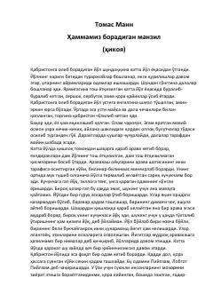

HBOg'ir qismat va yolg'izlik girdobiga tushgan insonning hayot yo'lidagi sarguzashtlari.
Ushbu asarda hayotning og'ir sinovlari, yo'qotishlar va yolg'izlik girdobida qolgan oddiy insonning ruhiy iztiroblari tasvirlangan. Bosh qahramon Lobgot Pijpzamning qabristonga eltuvchi yo'ldagi hayotiy mulohazalari orqali inson taqdirining fojiali qirralari ochib beriladi.